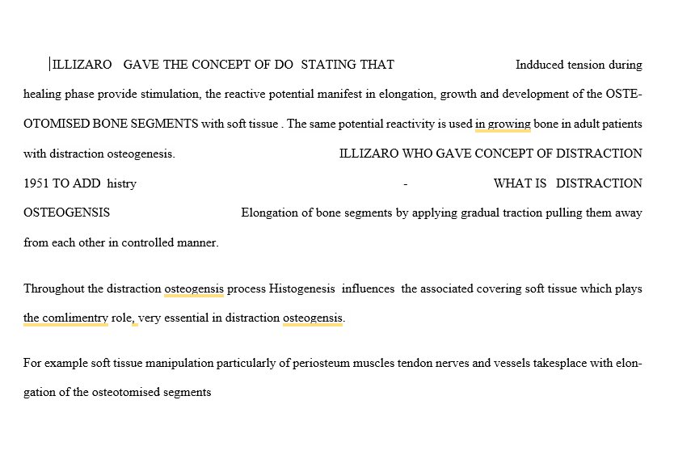
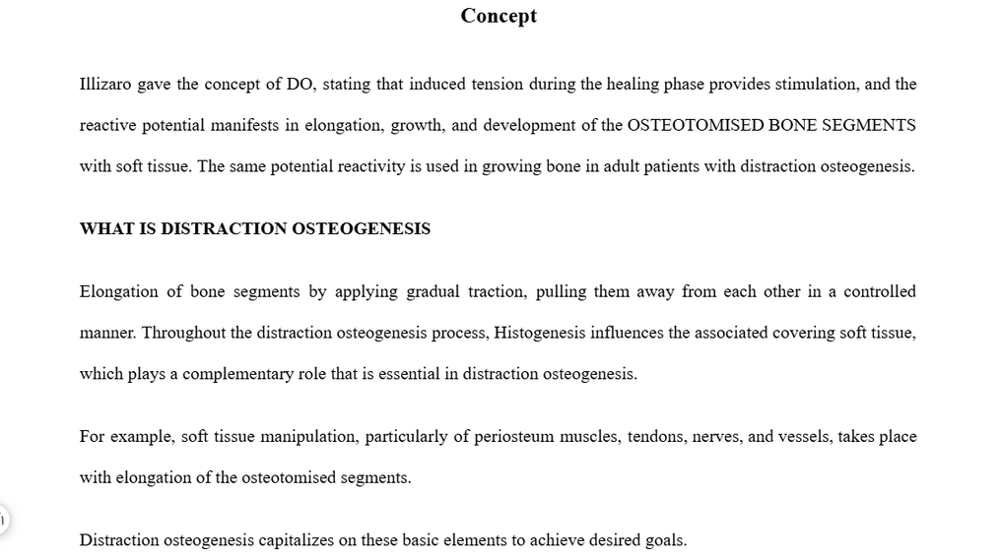
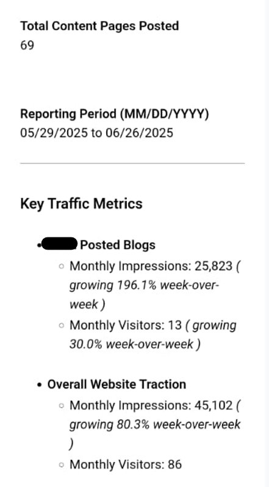

Content Editor · Book Editor · Proofreader
I make good content read like great content.
I'm Deepanshi, a content editor with 5+ years of experience working across B2B, SaaS, academic, technical, and publishing content.
I started out writing. That background matters because I don't just fix what's broken. I understand how content is built, which means I know exactly where it can go wrong and how to put it right.
Over the years I've edited everything from books and research articles to SEO blogs, legal documents, and social media copy. If there are words in it, I can make them better.
What I care about most is preserving your voice while improving your content. Good editing should be invisible. You shouldn't be able to tell where the writer ended and the editor began.



If you have content that needs a second pair of eyes, I'd love to take a look. Whether it's a manuscript that needs structural work, a blog that isn't quite landing, or an ongoing editing partnership, feel free to reach out.
I typically respond within 24 hours.